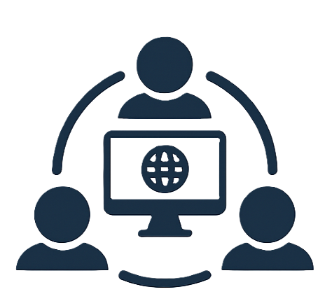

Community
Down Announcer: A Cooperative Monitoring Society
Down Announcer is a community-led initiative that unites builders, operators, and technologists to safeguard each other’s public-facing services. Members volunteer lightweight monitors for one another’s websites and accessible assets, ensuring timely, unobtrusive email notifications the moment something goes offline.
By pooling coverage, our community minimizes blind spots, reduces redundant tooling, and helps teams with straightforward uptime needs avoid ballooning monitoring bills—all while strengthening relationships across the technical ecosystem.
Visit DownAnnouncer.com
How the Cooperative Works
Collaborative Coverage
Members rotate simple uptime checks for one another, ensuring broad coverage without the expense of duplicate tooling.
Respectful Notifications
Email alerts are tuned to be precise and unobtrusive, keeping your team informed without creating noise.
Community Mentorship
Share operational insights, templates, and incident best practices with peers facing similar monitoring challenges.
Cost-Conscious Monitoring
Ideal for side projects and essential services that need reliable oversight without enterprise-level costs.
Bring Your Team Into the Network
Whether you support a grassroots community service or a growing startup, Down Announcer keeps teammates connected, responsive, and ready to help.
Join the CommunityReady to Transform Your Monitoring Strategy?
Schedule a consultation with our experts to discover how Monitoring Cybernetics can empower your team.
Contact Us Today